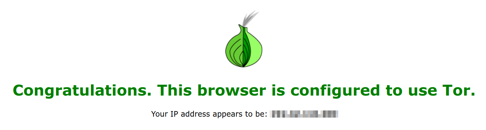
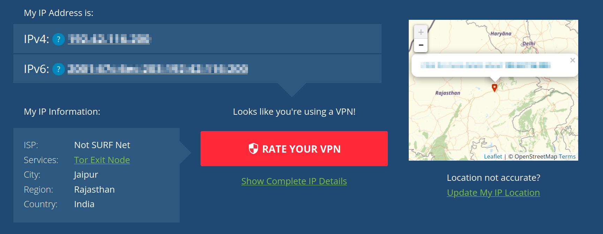

+------------------------------------------------------------------------------+ | | | $HOME about blog/ paper view-mode.sh | | | +------------------------------------------------------------------------------+ Instalasi Dan Konfigurasi TOR Di Arch Linux ____________________________________________________ Anonimitas memang menjadi pilihan dan dapat berarti hal yang berbeda bagi setiap orang. TOR (The Onion Router) [1] adalah sebuah jaringan yang dirancang untuk meningkatkan privasi dan anonimitas saat berselancar di internet. TOR bekerja dengan cara mengalihkan lalu lintas internet melalui serangkaian server yang dikelola oleh sukarelawan di seluruh dunia. Ini menciptakan "jalur" yang kompleks, sehingga lokasi dan identitas pengguna menjadi lebih sulit dilacak. Bagaimana instalasi TOR di Arch Linux? 1. Pasang paket TOR $ sudo pacman -S TOR $ yay -S tor-browser (opsional) 2. Mulai TOR $ sudo tor [notice] Tor can't help you if you use it wrong! [notice] Read configuration file "/etc/tor/torrc". [notice] Opening Socks listener on 127.0.0.1:9050 [notice] Opened Socks listener connection (ready) on 127.0.0.1:9050 Pada nomor ke-dua, saya melakukan Konfigurasi kembali untuk di gunakan pada Firefox dan tidak menggunakan paket dari tor-browser karena alasan kecepatan yang jauh lebih lambat. Jika teman-teman ingin ikut mencoba nya, ini cara nya : 1. Masuk pengaturan Firefox dan pilih "Network Settings" 2. Pilih "Manual proxy configuration" 3. Isi nilai dengan : SOCKS Host : 127.0.0.1 Port : 9050 4. Centang opsi "Proxy DNS when using SOCKS v5" untuk memastikan DNS juga menggunakan TOR   Apakah ini mirip dengan VPN? Ya, namun cara kerja nya "sedikit" berbeda dan yang paling utama adalah soal kecepatan. TOR sedikit lebih lambat karena rute yang berputar jika di sandingkan dengan VPN namun tingkat anonimitas TOR lebih kuat. Selamat berselancar dan menyelam! [1] https://www.onion-router.net/ ________________________________________________________________________________ Sukalaper © 2022, All rights reserved.